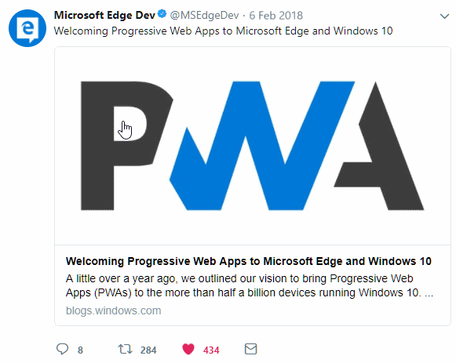
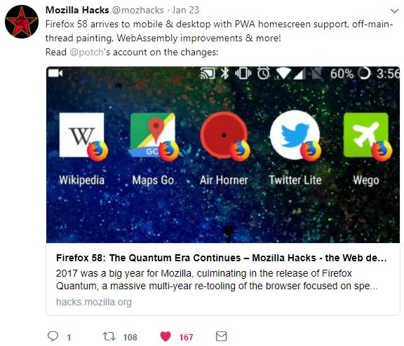
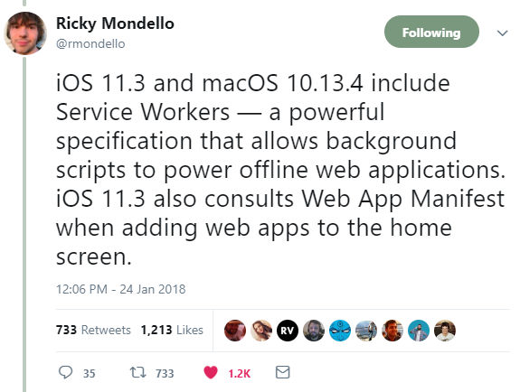
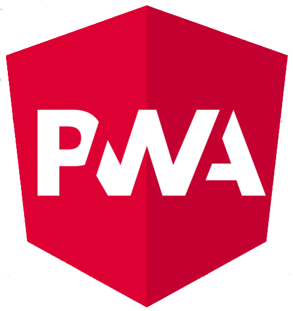
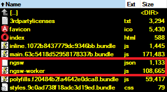

Aliaksei Kuncevic
Software Engeneer/Angular Consultant
v 1.0 (08/02/2018)

PWA with Angular
v 1.0 (08/02/2018)
What is
Progressive web apps (PWAs) are web applications that are regular web pages or websites, but can appear to the user like traditional applications or native mobile applications. The application type attempts to combine features offered by most modern browsers with the benefits of mobile experience.
(c) WikipediaPWA experiences
- Reliable (load instantly)
- Engaging (feel like a natural app)
- Fast (respond quickly to user interactions)
Reliable
Cache, network stateEngaging
Installable, user home screen, push notificationsFast
53% of users will abandon a site if it takes longer than 3 seconds to loadLatest modern browser features
whatwebcando.todayEdge
Firefox
Safari
Angular
Angular
@angular/service-worker
Angular PWA
angular.io/guide/service-worker-intro
Angular cli
Features
- PWA Support (CLI v.1.6+)
- Scaffolding (minimize boilerplate)
- Run unit and e2e tests
- Linting (tslint, codelyzer)
- Transpiling TypeScript
- Compress assets
- Compiling LESS/SASS
- Webpack (dev, prod builds, code split)
- Threes Shaking
- Build Optimizeration/Minification
- Produce CSS and JS bundles
Developer experience
- No need to implement service worker yourself
- Angular aware service worker
- Refresh on browser tab reload
- Config-driven
usage
npm install -g @angular/cli
ng new my-app --service-worker
cd my-app
ng build --prodbuild output
Code example
import { SwPush } from '@angular/service-worker';
@Component({
selector: 'app-control-push',
templateUrl: './control-push.component.html',
styleUrls: ['./control-push.component.css']
})
export class ControlPushComponent {
constructor(private swPush: SwPush) { }
showMessages() {
this.swPush.messages
.subscribe(message => {
console.log('[App] Push message received', message);
});
}
}Configuraton
{
"index": "/index.html",
"appData": {
"name": "app v1",
"description": "sample app"
},
"assetGroups": [{
"name": "app",
"installMode": "prefetch",
"resources": {
"files": [
"/favicon.ico",
"/index.html"
],
"versionedFiles": [
"/*.bundle.css",
"/*.bundle.js",
"/*.chunk.js"
]
}
}, {
"name": "assets",
"installMode": "lazy",
"updateMode": "prefetch",
"resources": {
"files": [
"/assets/**"
]
}
}, {
"name": "fonts",
"resources": {
"urls": [
"https://fonts.googleapis.com/**",
"https://fonts.gstatic.com/**"
]
}
}],
"dataGroups": [{
"name": "api-timeline",
"urls": [
"/timeline"
],
"cacheConfig": {
"strategy": "freshness",
"maxSize": 100,
"maxAge": "2d",
"timeout": "10s"
}
},
{
"name": "api-history",
"urls": [
"/history"
],
"cacheConfig": {
"strategy": "performance",
"maxSize": 100,
"maxAge": "5d"
}
}
]
}
demo
Links
angular.io/guide/service-worker-intro
whatwebcando.today
developers.google.com/web/progressive-web-apps
blogs.windows.com/msedgedev/2018/02/06/welcoming-progressive-web-apps-edge-windows-10
hacks.mozilla.org/2018/01/firefox-58-the-quantum-era-continues
blog.mozilla.org/firefox/progressive-web-apps-whats-big-deal
twitter.com/rmondello/status/956256845311590400
github.com/webmaxru/pwatter

whatwebcando.today
developers.google.com/web/progressive-web-apps
blogs.windows.com/msedgedev/2018/02/06/welcoming-progressive-web-apps-edge-windows-10
hacks.mozilla.org/2018/01/firefox-58-the-quantum-era-continues
blog.mozilla.org/firefox/progressive-web-apps-whats-big-deal
twitter.com/rmondello/status/956256845311590400
github.com/webmaxru/pwatter